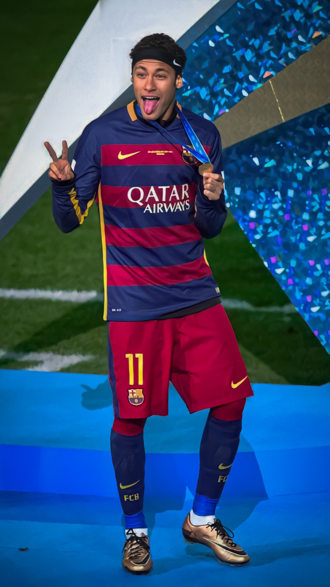
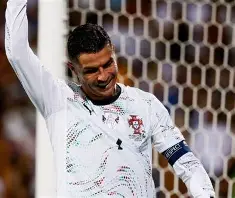

Historia del Fútbol
El fútbol moderno nació en Inglaterra en 1863 con la creación de The Football Association,
que estableció las primeras reglas oficiales del juego. Desde entonces se ha convertido
en el deporte más popular del mundo.
Reglas Básicas del Fútbol
- El partido se juega entre dos equipos de 11 jugadores cada uno.
- Gana el equipo que marque más goles en 90 minutos.
- Solo el portero puede usar las manos dentro del área.
- Las faltas pueden derivar en tiros libres, penales o tarjetas.
- El árbitro es la máxima autoridad.
- La regla del fuera de juego evita que un jugador se quede “esperando” cerca de la portería rival.
Posiciones en el Campo
- Portero: protege el arco.
- Defensas: evitan ataques del rival.
- Centrocampistas: controlan y distribuyen el juego.
- Delanteros: encargados de anotar goles.
Jugadores de Fútbol Reconocidos

